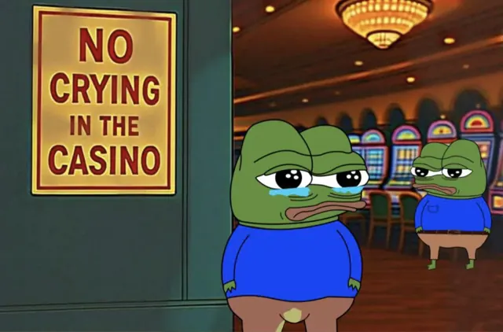
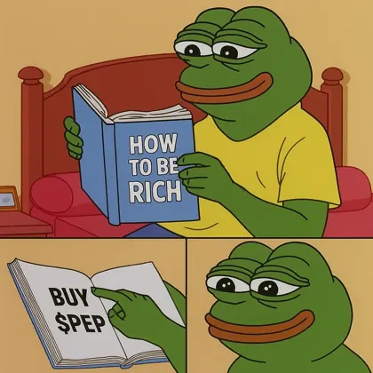

Guide
How to buy Pepecoin (PEP) without buying the wrong frog
PEP is the coin of the Pepecoin blockchain. Most exchanges trade it against USDT, and Kraken also against US dollars and euros. Buying takes four steps and ends with your PEP in a wallet you control.

Speedrun
Step by step

- Pick a marketChoose an exchange or swap service that lists PEP, such as the ones below. Kraken lists three different assets with Pepe in the name: PEP is the one called Pepecoin, with its own blockchain. How to tell them apart.
- Fund your account and buyDeposit money or USDT under the exchange’s own rules, then buy on the PEP/USD, PEP/EUR or PEP/USDT market.
- Withdraw to your own walletIn the withdrawal form, pick the Pepecoin network and paste a receiving address from your wallet. PEP addresses start with P. The exchange sets its own withdrawal fee and minimum. Which wallet to use.
- Check it in a block explorerPaste your address or the transaction ID into PepeBlocks or Pepeplorer and watch it confirm. A new block arrives about once a minute.
No referral codes
Where PEP trades
As listed on pepecoin.com on October 6, 2026. Links go straight to each service, with no referral codes. A listing here is not a recommendation.

| Service | Market | Kind |
|---|---|---|
| Kraken | PEP/USD, PEP/EUR | exchange |
| MEXC | PEP/USDT | exchange |
| Biconomy | PEP/USDT | exchange |
| NonKYC | PEP/USDT | exchange |
| Ourbit | PEP/USDT | exchange |
| XT | PEP/USDT | exchange |
| StakeCube | PEP/USDT | exchange |
| SimpleSwap | swap | swap service |
| StealthEX | swap | swap service |
| Trocador | swap | swap service |
| Alchemy Pay | card | buy with a card |
CoinEx is left out: it ended spot trading on September 29, 2026, and withdrawals close on December 22, 2026 (BeInCrypto).

Read before you hit withdraw
Wrong network = no crying in the casino
- An address that starts with 0x belongs to Ethereum, a different network. PEP must go to a Pepecoin address that starts with P.
- Wrong-network sends are usually irreversible.
- On the withdrawal form, pick the asset labelled Pepecoin / PEP — not PEPE or PEPECOIN.
Asked a lot in the Discord
Common questions
Which network do I pick when I withdraw PEP?
Pepecoin (PEP). The receiving address must start with P. An address that starts with 0x belongs to Ethereum, a different network. On the withdrawal form, pick the asset labelled Pepecoin / PEP — not PEPE or PEPECOIN.
Is PEP the same as PEPE or PEPECOIN?
No. PEPE and PEPECOIN are tokens on Ethereum. PEP is the coin of its own blockchain. See Which Pepecoin is which?
What if I withdraw PEP to an Ethereum 0x address?
Wrong-network sends are usually irreversible. PEP must go to a Pepecoin address that starts with P. After you send, check the transfer on PepeBlocks or Pepeplorer.
Can I buy PEP with a card?
Alchemy Pay is listed on pepecoin.com for buying with a card. Exchanges set their own deposit options, so check the exchange you use.
How long does a withdrawal take?
Pepecoin adds a block about once a minute. How many confirmations an exchange waits for, and how fast it sends withdrawals, is up to the exchange.
Next lily pads
More guides
